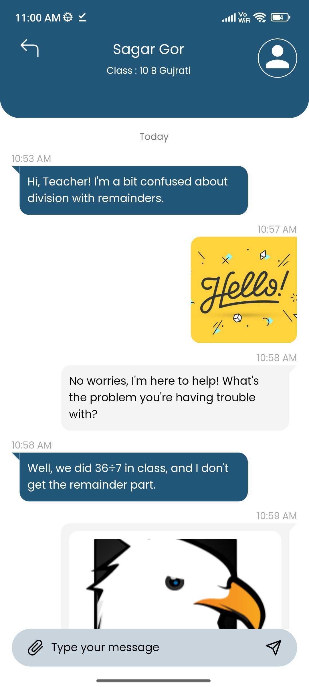
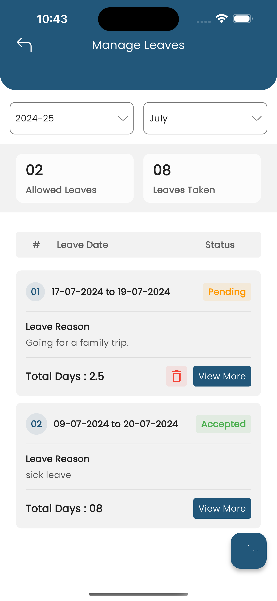
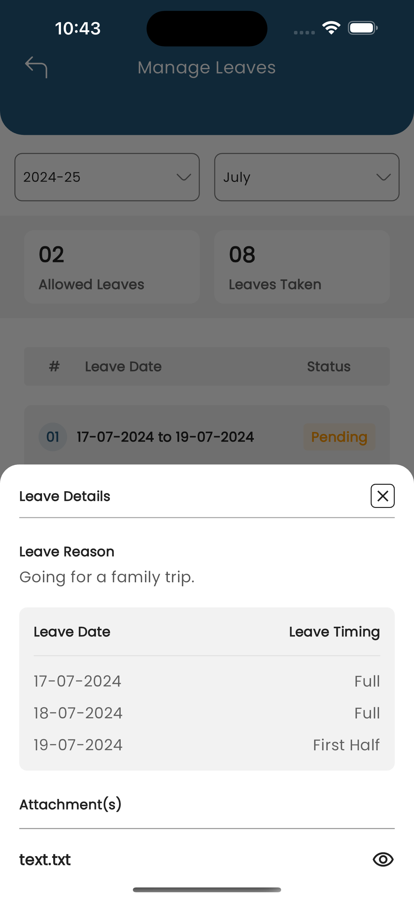

eSchool Features Documentation
By : WRTeam
Email :
wrteam.aayush@gmail.com
Thank you for purchasing e-School. We appreciate your support. In this documentation, you will find instructions on how to set up the admin panel and mobile application for e-School. This document also provides features of e-School. If you have any questions, feel free to reach out. Thank you for choosing e-School!
Academics
Mediums and Sections
The Academics feature in e-School allows the admin to define the mediums (languages) in which the school operates, such as English, Hindi, and Gujarati. Additionally, the admin can create sections for classes, such as A, B, C, and so on.
Stream and Shifts
Streams are used to divide classes based on subject preferences, such as Arts, Commerce, or
Science. By creating streams, schools can offer specialized education and personalized
learning
experiences.
Shifts are utilized to organize classes into different time-zones, like Morning or
Afternoon, to
accommodate students' schedules. With shifts, schools can efficiently manage classroom
capacities and balance student-teacher ratios.
Subjects
The admin can create new subjects within e-School. Each subject can be associated with one of the mediums and has a name, type (theory or practical), optional subject code, custom background color, and image to be displayed in the application. This allows for easy organization and identification of subjects across different classes.
Class
In e-School, the admin can add classes by choosing the mediums and sections that each class will have. For example, selecting English as the medium and A, B, C as the sections will automatically create classes like 10 A English, 10 B English, and 10 C English. Similarly, selecting Gujarati as the medium and A, B, C as the sections will create classes like 10 A Gujarati, 10 B Gujarati, and 10 C Gujarati. Optionally a shift can be chosen for any class to indicate the time-zone it'll be taken on. There is also an option of sub-dividing classes into streams based on student's subject preference.
Class Assign Subject
Each class can have one or more core and elective subjects assigned to it. The admin can assign subjects to specific classes based on the curriculum requirements. This ensures that students in each class have access to the appropriate subjects for their academic journey.
Assign Class Teacher
Teachers can be assigned as class teachers for one or more classes. The class teacher plays a crucial role in overseeing the overall academic progress and discipline of the students in a particular class. One teacher can be class teacher of multiple classes. The class teacher can use features like attendance to take attendance of students in their class and giving offline exam Marks to the students in their class who has given the offline exam.
Assign Subject Teacher
Teachers are chosen to teach different subjects based on their expertise and qualifications. The admin can assign subject teachers to specific subjects across different classes. This ensures that students receive instruction from teachers who specialize in the respective subjects, enhancing the quality of education.
Assign New Student Class
The admin can use the this feature to assign a new student to a specific class and class section. This feature allows for easy management of student enrollment and ensures that each student is allocated to the appropriate class and section within the school.
Promote Student
The promote student feature allows for the seamless promotion of students from one class to another at the end of the academic year. This simplifies the administrative process and ensures that students progress to the appropriate next level in their education.
Admission Form Dynamic Fields
The Dynamic Admission Form Field is a feature that simplifies students, parents and teachers enrollment. School Admin can add their own form fields in students and parents admission forms and teacher form with various types like textboxes, radio buttons, checkboxes, textareas, and file uploaders to suit the specific needs of the schools, and making the admission process efficient and adaptable to changing needs.
Educational Program
Admins can now link Educational Programs with specific classes efficiently. By navigating to the "Educational Programs" section , they can select a program and associate it with relevant classes.
Student
Student Admission
The Student Admission section in the e-School web panel allows administrators to add new
students. They can provide details such as the student's first and last name, gender,
profile
image upload, class and category selection, caste, religion, blood group, height, current
and
permanent addresses. Additionally, administrators can add information about the student's
mother
and father, including their first names, last names, mobile number, profile image, email
addresses, date of birth, occupations, and genders. An optional guardian can also be added,
including similar details.
A student will be assigned a unique GR number automatically on admission. It will be used by
the
student to log in to the eSchool application with the date of birth (ddmmyyyy) as the
default
password. If new parents are created while admitting a new student, their email and date of
birth will be their parent login details for the eSchool application.
Parents
The Parents Management section in the e-School web panel provides administrators with the ability to view and modify the data of all parents associated with the students from the school. This tab serves as a central hub for managing parent information, ensuring effective communication and accurate records.
Student Roll Number Assignment
The Student Roll Number Assignment feature enables administrators to easily assign first name or last name wise roll numbers to students in any class. This functionality simplifies the management and organization of student records within the e-School system.
Student Details Management
The Student Details Management section allows administrators to view, edit, or delete student information. This page provides convenient access to student records for necessary updates or modifications.
Student Category Management
The Student Category Management feature allows administrators to manage student categories within the e-School system. This includes creating categories such as general, OBC, ST, SC, or any other relevant categories, and assigning them to students as needed.
Reset Password
The Reset Password feature enables administrators to reset a student's login password for the e-School application. It resets chosen student's password to the default password which is the student's date of birth in format ddmmyyyy.
Add Bulk Student Data
The Add Bulk Student Data feature allows administrators to add a large number of students by uploading a CSV file in a specific format. Administrators can download a dummy file with the required format using the "Download Dummy File" button. This functionality streamlines the process of importing student data into the e-School system.
Teachers
The Teachers screen in the e-School web panel allows administrators to manage teachers within the school. From this screen, administrators can create new teachers by filling in details such as first name, last name, gender, email, mobile number, optional profile image, date of birth, qualification, current address, and permanent address. Additionally, administrators have the option to grant teachers permission to manage student and parent data, enabling them to perform these tasks from their own panel or app.
Once a new teacher is created, they can log in using the web panel with their email and password (with the default password being their date of birth). Alternatively, teachers can also log in using the teacher app, which provides access to teacher-specific features based on their permissions and assigned classes. Class teachers may have additional actions available to them, such as taking attendance for their assigned students.
Teacher Panel & App Features:
- Timetable
- Holiday List
- Lesson and Topic
- Student Assignment
- Attendance
- Announcement
- Online and Offline Exams
- Leave Management
Special Permissions:
In addition to the listed features, teachers can have permission to manage student details and parent data. With these special permissions, teachers can view and update student information, as well as manage parent details. This allows teachers to have a more comprehensive understanding of their students and parents details.
Timetable
Create Timetable
The admin can create the timetable for each class section from Monday to Sunday. They need to select the subject, teacher, starting time, ending time, and can add an optional note to create a timeslot on a specific day of the week in the timetable for a class section.
Class Timetable
In the Class Timetable section, both the admin and teachers can view the timetable specific to each class. This provides a comprehensive overview of the schedule for a particular class, allowing teachers and administrators to plan and prepare their lessons accordingly.
Teacher Timetable
In the Teacher Timetable section, the admin can view the timetable for any teacher. This allows the admin to have visibility into the schedule of each teacher within the school. Additionally, teachers themselves can access their own timetable to keep track of their assigned classes and time slots.
Online Class/Custom Link
Teachers can add links to timetable slots, making the link titles visible in the application. When tapped, these links will open the associated URL. This feature allows teachers to directly integrate live class or other relevant links into the timetable, enabling students to join with ease. After the live class link expires, teachers must manually update or remove it. For example, Google Meet links remain active for 90 days.
Holidays
The admin can manage holidays from this section. To create a holiday, the admin needs to choose a date, title, and an optional description. This allows the admin to schedule and organize holidays effectively within the school calendar.
Teachers can view the holidays from their panel, providing them with visibility into the scheduled holidays. This helps teachers plan their lessons and activities accordingly.
Holidays will also be displayed to students and parents in the applications, appearing in the calendar. This ensures that students and parents are aware of upcoming holidays and can plan accordingly.
Sliders
The admin can create sliders from this screen, allowing them to showcase images on the application's home screen. These sliders serve as visual highlights and can be used to display various topics or important information to everyone.
The admin have the ability to edit or delete existing sliders, providing flexibility in managing the displayed images. This feature allows for effective customization and presentation of relevant content to users.
Sliders can be utilized to showcase a range of topics in the eSchool app, such as:
- Upcoming Events and Activities
- School Achievements and Awards
- Important Announcements
- Featured Programs or Courses
- School Facilities and Resources
Announcements
Announcements can be managed from this screen by both teachers and admins. It allows for effective communication and dissemination of important information within the school community.
To create an announcement, the title is mandatory. Additionally, admins and teachers can add a description and attach multiple files to the announcement, providing detailed information and additional resources if needed.
These announcements can be assigned to the notice board by the admin, ensuring that they are prominently displayed for everyone to see. Teachers can also assign announcements to their respective class sections, enabling targeted communication with specific groups of students.
Students will be able to see these announcements in the application, which can help the school's principal and teachers to:
- Share important school-wide news and updates
- Communicate changes in school policies or procedures
- Inform students about upcoming events, competitions, or workshops
- Provide resources and study materials for specific subjects or topics
- Announce academic achievements, awards, or recognition
- Remind students about assignment deadlines or exam schedules
- Promote community service opportunities or extracurricular activities
- Share safety guidelines and emergency protocols
- Celebrate special occasions and foster a sense of community
Attendance
Add Attendance (Teacher Panel Login)
Class teachers can take attendance for students in a class, either for today or for a specific date, from this section. Additionally, teachers can make a day holiday for the students in a class on the selected date.
View Attendance (Teacher Panel Login)
Teachers can view the attendance of a specific class. They can filter it by present, absent, and holiday types, as well as by date. Additionally, a download feature is available to export the attendance data.
Add Bulk Data (Teacher Panel Login)
Teachers can easily manage class attendance by utilizing the Bulk Data Entry feature. They can select the desired class and date range, generating a dummy data file containing pre-filled student details. In this file, teachers need only input '1' (for present) or '0' (for absent) in the 'type' column for each student on each date. Afterward, they can effortlessly upload the file using the form below and submit it to efficiently record attendance in bulk.
eSchool & eSchool Teacher application
Teachers can also take/view attendance from the teacher application. Students and their parents can view their attendance monthly report from the eSchool application.
Attendance Report
Admins and class teachers can view attendance reports by selecting the session year and class name. This feature allows them to access and review attendance records for any session year, providing a comprehensive overview of student attendance patterns and helping in maintaining accurate records.
Lessons and Topics
Create Lesson (Teacher Panel Login)
Teachers can effectively manage lessons for students in a specific class section and subject. When creating a lesson, teachers will see their class sections and subjects available for selection.
They can then provide a name and description for the lesson and even have the option to add multiple files to complement the lesson. Once created, these lessons will be visible to students from the respective class section and subject within the application.
Students can easily download and access the files attached to the lesson to enhance their learning experience.
Create Topic (Teacher Panel Login)
Teachers can manage topics from this section. Each lesson can have multiple topics, and teachers can create them by selecting the appropriate class section, subject, and the associated lesson.
When creating a topic, teachers can provide a topic name and description, and optionally select relevant files to enrich the content.
Students will be able to view these topics within their lessons through the application, providing a well-organized and structured learning experience.
Assignments
Create Assignment (Teacher Panel Login)
Teachers can create assignments for their class sections on a particular subject. When creating an assignment, teachers must provide a name and submission date for the assignment.
They can also add detailed instructions and files to provide students with additional information and resources. Moreover, teachers can specify the points that students can earn by submitting the assignment.
Furthermore, teachers have the option to allow resubmission of rejected assignments. In such cases, they must specify the extra days allowed for resubmission.
Students from the class section to which the assignment was assigned will see these assignments in the application. They can upload their files and submit the assignment to the teacher through the app.
Assignment Submission
Admin and Teachers can view the submitted assignments in this section and accept or reject the submissions.
They also have the ability to provide feedback and assign points to the submitted assignments.
Students will be able to see the feedback and updated status of their submitted assignments in the "Submitted Assignment" section of the application.
Students now have the ability to include textual data along with their assignment files directly from the application. This feature allows students to provide additional context, explanations, or details related to their assignments, enhancing communication and clarity between students and instructors.
Online and Offline Exams
Create Exam
Exams can be managed by the admin from this screen. They can create exams by providing an exam name, selecting the session year, choosing one or more classes, and adding an optional exam description. The admin has the ability to edit, delete, and publish results for exams.
Create Exam Timetable
The admin can create the timetable for exams using this screen. They can select an exam, a class, a subject, total marks, passing marks, starting time, ending time, and date. Students will be able to see the exam schedule in the app, but the exams will be conducted offline on the campus.
Exam Grade
From this page, the admin can create a grading system for exam percentages. They can define grade ranges based on percentage values, such as 0 to 35 = F, 36 to 50 = D, and so on. This allows for consistent and standardized evaluation of exam results.
Upload Exam Marks (Teacher Panel Login)
Teachers can use this feature to enter and upload marks for students who have taken the exam. They can input the marks obtained by students for each exam.
Student Exam Result (Teacher Panel Login)
Teachers can view and manage the results of students' exams here. This feature provides access to exam results on a student-by-student basis, allowing teachers to track and analyze performance.
Manage Online Exam (Teacher Panel Login)
Teachers can efficiently manage online exams for different classes from this section. They have the flexibility to select the class section, subject, and fill in the exam title, along with a secret exam key that students will use to join the exam. The duration, in minutes, can be specified to allow students to answer the online exam questions within a defined time frame.
Additionally, teachers can set the starting date and ending date for the online exam. Once created, these exams will be accessible to students during the scheduled period. Furthermore, the marks will be automatically calculated based on the questions added to the exam, streamlining the assessment process.
Manage Questions (Teacher Panel Login)
In this section, teachers can efficiently manage questions for various classes and subjects. They have the option to create two types of questions: simple questions and equation-based questions.
For simple questions, teachers can provide textual questions, along with multiple textual options and indicate the correct answer. Additionally, they can optionally include images and notes to enhance the question's context and clarity.
On the other hand, equation-based questions offer an HTML editor and various features to seamlessly integrate mathematical equations within the question and its options. Once created, teachers can add these questions to specific exams, associating them with the relevant subjects.
Terms & Conditions (Teacher Panel Login)
Teachers can customize and add their own terms and conditions for exams through the text editor provided in this section. Students must agree to these terms before attending the exam via the application.
Fee Payment
Fees Configuration
To utilize the fees feature with online payment, administrators must complete this form by providing their payment gateway details such as Razorpay or Stripe. Additionally, they need to specify the currency code and symbol for the payments.
Session Year
Parents can pay their students' fees only for the current session year. Each student can be assigned to a particular class in a session year and a different class in the subsequent session year. In this section, administrators can create new session years and manage existing ones.
When setting up a session year, administrators need to enter its name, starting date, ending date, fees due date, and fees due charges (in percentage). Optionally, administrators can enable installment fee payments and set up one or more installments with names, due dates, and due charges (in percentage).
These dates and charges will be applicable to students paying their fees in the current session year. Administrators can designate the current session year from the general settings in the system configuration.
Fees Type
Administrators can create various types of fees from this section, such as exam fees, gym fees, sports fees, and more. Each fee type can have a title and description to provide additional context.
Assign Fees Classes
Administrators can assign different types of fees to specific class sections in this section. These fees can either be optional or non-optional, and their amounts can vary for each class section.
For instance, sports fees could be $90 for Class 9A and $200 for Class 12B. Administrators can customize the amounts for individual fee types according to each class.
Fees Paid
Administrators can view the fee payment status of all students from various classes in this section. If students and parents are making payments directly to the admin/principal using cash or cheque, the admin can record those payments in the compulsory/optional fee payment section.
Furthermore, administrators have the convenience of downloading PDF receipts for fees that have already been paid.
Fees Transactions Logs
This section displays logs of all fees transactions. Administrators can access detailed information about each transaction related to fees.
Fees Online Payment (Parent Login eSchool App)
Parents can conveniently pay their student's current session year fees online through the application. In the student options -> fees section, they can access information about all session years where fees have been paid and download receipts for their records.
Parents have the flexibility to pay pending fees for the current session year. They can either make full payments for compulsory fees or, if installment options are enabled, pay one or more installments. Additionally, they can pay optional fees at any time without concerns about due charges.
In the settings -> fees transaction option, parents can review all fee payment transactions, including the amount and status of each payment made.
Compulsory Fee Payment Settings
|
The Admin can enable the compulsory fee payment mode from the Fees Configurations form. When this mode is activated, parents are required to pay the compulsory fees for their child before the due date to ensure the continuation of their child's studies and access to the student application. The application-usage restriction will be activated only if the fee-payment is due after the free app usage date is reached. This can be added while setting-up fees settings while creating session year which defaults to compulsory fee payment's due date. After the due date is reached, the student has to pay fees to use application either fully for the session year or installments (if enabled). If they choose to pay installments and after next installment is due, they'll again not be able to use application without paying the due installment first. |
|
Student Can Pay Their Own Fees
Admin can enable settings from the Fees Configurations form, which allows students to pay their fees. When the Admin enables the student fee payment mode, it activates the necessary options and features to facilitate fee payments by students.
Custom Notifications
Admin Panel

Student App

Custom Notifications
Custom notifications in eSchool allow users to create and send personalized messages for all users, specific user, students, parents, and teachers which will shown on notification section in applications. These notifications can be created only by admin to specific events, such as important announcements, upcoming school activities, academic updates, and more. With the flexibility to choose recipients, message title, message content.
Chat
The Chat feature in our eSchool project enables students to communicate with their class teachers, while parents can chat with any of their children's teachers. Teachers can easily engage with parents and students associated with their classes. The feature includes real-time messaging using notifications, and supports text, images, and file sharing. It ensures a seamless and organized communication experience for all users.

|
 |
Academic Document Generation
ID Cards Setting
In the ID card settings, admins can customize how student ID cards look. They can change colors, add signatures, and even put background pictures. These options help make each ID card unique while still fitting the school's style.
ID Cards List
In the Student >> Generate ID card section, Admin and Teacher can select students by checking the checkbox next to their names. Once they've selected the desired students, they simply click "Generate" to create ID cards specifically for those chosen students. This streamlined process ensures that ID cards are efficiently produced only for the selected students, saving time and effort for admin.
School Bonafide Certificate & Leaving Certificate
In the Student Details section, Admin can swiftly produce bonafide and leaving certificates. These documents verify a student's enrollment status or departure from the institution, essential for tasks like visa applications or academic transfers.
Here, Admin can add additional details like reason and validity when generating bonafide certificates. This ensures accurate documentation for various purposes, such as scholarship applications or official requirements.
Admin can generate student's leaving certificate, include specific details such as the reason for leaving, the class to which the student is promoted, their general conduct, and any additional remarks. These details provide a comprehensive overview of the student's tenure at the institution, facilitating smooth transitions to new academic endeavors or other pursuits.
Student's Result
In the "Generate Result" section, Admin and Teachers can access student results by selecting a class and clicking "search". They can then view individual student results with an interactive interface, downloading them as needed. Only published exam results are shown, ensuring privacy and accuracy.
Note:
- File Location to change content of Bonafide
Certificate -
resources/views/students/bonafide_template.blade.php
- File Location to change content of Leaving Certificate
-
resources/views/students/leaving_template.blade.php
Teacher/Staff Leave Management
Leave Setting
The leave management process begins with the Admin configuring the leave settings. This involves selecting the total leave allowance per month and defining the session year. The Admin also has the ability to edit or update these settings as needed. Once these configurations are in place, teachers and staff can proceed to apply for leave.
Leave Report
Admin can view leave details for each teacher/staff member for all session years by selecting the individual teacher/staff user name for the particular session year.
Staff Leave
Admin can view all teacher/staff leave requests, approve or reject them, and access detailed leave information for each user.
Apply Leave (Teacher/Staff Panel)
Teachers/Staff can apply for leaves with file attachments, view their leave requests, and delete requests before approval to make modification delete the old request and submitting a new request.
Leave Report (Teacher/Staff Panel)
Teacher/Staff can view their leaves details remaining leaves for individual session year.
Leave Management (Teacher App)

|
 |  |
Teachers can apply for leave and check status of those from the application. Leave request can have date-range, but if there are any holiday days in that range they'll be auto-removed from the leave request. They can delete pending leave requests as well. Remaining and taken monthly leave count is also shown.
Student Self Registration
Content Settings
Admin has the ability to enable the 'Registrations' option, allowing them to activate or deactivate the registration feature based on their preferences or requirements. When enabled, users can access and utilize the registration system to sign up for classes, events, or other activities.
Online Registration Form
The user can complete the registration form directly from the webpage. Once the form is submitted, the request is reviewed by the administrator. Upon approval, the user will gain access to the system and be able to log in. After the registration request is accepted, both the student user and parent user will receive login credentials, allowing them to access their respective accounts and begin using the platform.
Approval of Online Registration
Admin has the authority to approve or reject student applications. If the application is approved, the admin must assign the student to a specific class and section. Once this is done, the system will automatically send the student's login credentials to the parents via their registered email or ID. In the case of rejection, the parents will receive an email informing them that the application has been denied, along with any necessary details or next steps.
Semester
Semester
Moving forward, the admin can now associate semesters with each class. This allows the admin to organize and manage class schedules, subjects, and activities more effectively by linking them to specific semesters. When creating or editing a class, the admin will have the option to select the relevant semester, ensuring that all academic activities are properly aligned with the academic term structure.